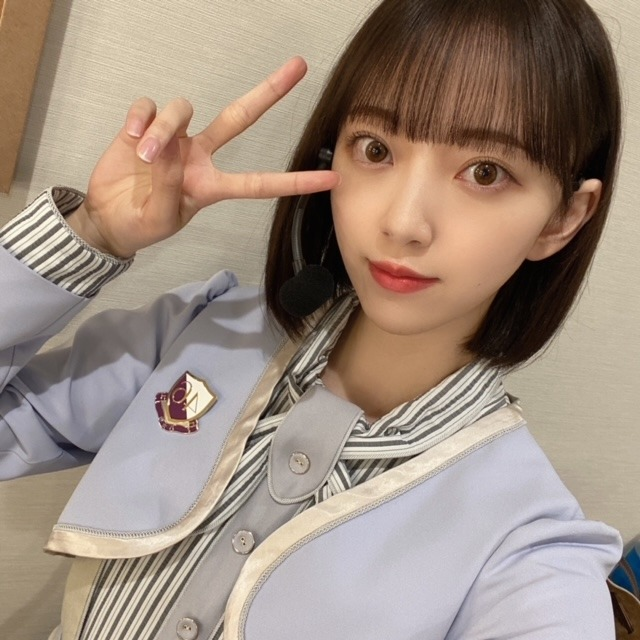

2021/0328Sun乃木坂46の堀未央奈です。
この挨拶も、今日でおしまい。
明日からは"堀未央奈"になります。ね、
乃木坂46に加入して今日で8年ぴったり。
今日の2期生ライブはどうでしたか...？
私は、この時間がずっと続けばいいのに...と何度も心の中で思いました。
リハーサルからみんなの顔が見れなくて、
それは胸がざわざわ苦しくなって
大好きで楽しいのにつらくて寂しくてたくさんの感情が押し寄せてどうしようもできなかったからです。
気持ちを押し殺すのは得意ですが、今回ばかりは溢れました。
8年前、
16歳の私は分からない事だらけで都会にも慣れず、今の私がみても不安になるくらい自分に自信もなければ実力もなくてふわふわしていました。
でもたくさんの経験をしていつのまにか自分の事も人の事も好きになる事ができて、新しいことや挑戦が"怖い"という思いより"楽しい"に変わっていきました。
乃木坂46としての活動も自信と責任を持って
取り組んでこれた8年間だったなと思います。
メンバー、家族、スタッフさん、友達、ファンの皆さん
本当に私は周りの人に恵まれていて支えられながら毎日を過ごしてきました。
強がって一人で抱え込もうとしますが、なんだかんだで周りの人に支えられっぱなしで...
みなさんがいなかったら今の私は存在していないと思います。たくさんの感謝の気持ちでいっぱいです。
MV撮影、ライブ、歌番組、イベント、
撮影、、、何もかもが新鮮で挑戦で...
わたしには夢のような
未だに私が乃木坂46だったという事が
神隠しにあっていて夢だったんじゃないかと思うほど
あっという間で濃密な時間でした。
いや、でもネット検索したらちゃんと出てきますよね。夢じゃない。よかったー。
来世では、乃木坂46に入って、
同じメンバーで、
また違う景色をみてみたいなとも思います。
たのしみ。
明日からは1人になりますが関わる方や応援してくださる方、全ての方への感謝の気持ちと初心を忘れずに頑張っていきたいと思います。
今までの活動で自分の盾となってくれたメイク関連のこともしていって、少しでも自信を持ちたいと思っている方の力になりたいのと、人が幸せになるようなプロデュースなどもしていきたいです。
女優としても0から、自分に厳しく、楽しみながら
私らしくいろんなことに挑戦していきたいなと思います。
堀未央奈を推していて、楽しかったですか？
楽しかった と言っていただけたら、
それだけで私はもう大満足です。
私は皆さんに出会えて本当によかったです。
ありがとうございました


2021.3.28
乃木坂46 2期生 堀未央奈
コメント(4413)
2期生のこと今まで引っ張ってきてくれてありがとう！
昨日の2期生ライブも最高でした（泣きすぎて頭が痛くなりました）。
1回だけでしたが堀ちゃんの握手会にも行けたので良い思い出です。
これからも応援していきます！
卒業おめでとう、乃木坂をやめてもずっと応援してるよ！
最っ高に楽しかったです！
8年間お疲れ様でした！次の道でも頑張って下さい！変わらず応援し続けます！
本当にありがとうございました
推していて楽しかったですか？
答えはもちろんyesです。
というより推させてくれてありがとう、未央奈ちゃんに出会えて良かった、と心から思える存在です
“乃木坂46堀未央奈”として過ごした8年間本当にお疲れ様でした！
これからの“堀未央奈”も応援し続けますよ！
冷たい水の中という新たな世界でも頑張れ未央奈!!
( o≧д≦)oｶﾞﾝﾊﾞﾚｰ!!
これからも応援します！
本当に乃木坂46の未央奈は凄かったです。ありがとう
昨日の２期生ライブ感動的で最初から最後まで涙が込み上げてきて、２期生と、未央奈の思いが伝わりました。
今後も未央奈さんの活躍を期待しております。
めちゃめちゃ楽しかった！
これからも楽しみ！
2期生ライブ、最高でした!
しかし、僕は途中から涙がとまらなくなって、いつの間にか両手にティッシュを持っていて、ティッシュと共に一時を過ごしましたw
そのせいで、涙目の状態が続き、堀ちゃんをしっかり見ることが出来ませんでした、ごめんなさい…
堀ちゃんにとって8年間は長かったですか、それとも短かったですか？
いろいろな思い出がありましたね〜
堀ちゃんにとって1番の思い出は何ですか？
僕の一番の思い出は名前のとおりレコメンですね。（僕の前のコメントを見たのならまたかよと思わないでくださいw）
堀ちゃんがオ−プニングト−クがしたくて、プライベートで一輪車に乗ったら左足だけ筋肉痛になった話とか、のりさんがお土産で持ってきたピ−ナッツ最中を堀ちゃんが盗んだこととか、堀ちゃんの誕生日企画でBBQをした際になかなかお肉をもらえず、イライラしていた堀ちゃんにわざと牛丼をプレゼントしたら、嬉しそうに「牛丼だ〜!」と喜んでいたこととか、ジャックスパロウ選手権とか、いろいろありましたね〜
堀ちゃんがレコメンのバ−ソナリティを務めたあの3年間は5軍の僕にとって幸せな3年間となりました！
最後に堀ちゃんに伝えたいことがあります。
・音楽番組やバライティー番組に全力で取り組むと
ころ
・乃木坂46を引っ張ってきてくれたところ
・いつも美を追求しているところ
・リア充が嫌いなところ（w）
・僕たちレコメンリスナーを好きでいてくれるとこ
ろ（？）
全部、全部大好きだよ！！！（某メンバ-卒コンの時の同期の子の手紙風に書きました）
これからもずっと応援し続けます！
これからもがんばレコみおな！！！
2期生ライブとても感動した‼︎
2回目のアナスターシャが流れた時はとても涙が流れた。
卒業おめでとう㊗️
これからは、女優としての『堀 未央奈』と
未央奈ちゃんが大事にしてきた2期生を応援したいと思います。
出会えて、応援できて本当に幸せでした。
未央奈ちゃんもずっとずっと幸せでいて下さい‼︎
8年間お疲れ様でした
握手会ありがとうね
自分の大切な思い出です
未央奈と話したこと忘れません
また本当に2期生引っ張ってくれてありがとう
これからも多分握手はできないと思うけど
堀未央奈ちゃんを応援していきます
私は、未央奈さんの推しでとっても楽しかった
未央奈さんは私の支えでした
未央奈さんに出会えて良かったです
2期生ライブも最高でした
これからの未央奈さんの活躍が楽しみです
ずっとずっと応援しています
今まで本当にありがとう
大好き
私が乃木坂のMVをはじめて見た時、最初にかわいいなって
思ったのが未央奈でした。それから未央奈の今までの努力とか、思いを知ってどんどん沼にはまっていきました。
乃木坂を知っていくうちに未央奈以外のメンバーにも目が行くようになって推しメンが増えて未央奈から少し離れてしまう時期もあったけど未央奈の卒業発表をきいて今までのどのメンバーの発表よりも喪失感と寂しさと涙があふれてきて私はやっぱりあなたが大好きだったと気づきました。
発表から卒業までどの番組でもあなたの姿を追いかけました。
私の目には一番輝いてました。
堀未央奈という人に出会えてほんとによかったです。
これからもずっと応援しています。
同い年で、いつも努力を続ける姿を尊敬しています。初めてアイドルグッズを買ったプロデュースパーカーも、写真集も宝物にします
卒業してからも応援させてください！！
今まで本当にありがとうございました！
これからもずっと応援しています。
お疲れさまでした｡
昨日の乃木中も観ましたよ。
２期生House本当面白かった！
２期生の仲の良さもとても伝わったよ❤️
バナナマンさんもとってもVTR観ながら楽しんでて笑ってて嬉しかったね！
もちろん２期生以外のメンバーも！
スタジオが笑顔で包まれていて、やっぱり未央奈の人柄だなと思ったよ。
乃木坂46に未央奈は間違いなく必要な存在でした。
卒業したけれど、未央奈がいたことが本当に誇りです。
ありがとう！！
本当に心から大好きです❤️
やっぱりしばらく乃木坂46に未央奈がいないことになれなくて、寂しくてどうしようって思いだけど…。
未央奈の応援はずっと続けるからね！
やっぱり未央奈は私にとって大事な、大きな存在だったんだなと思うよ！
未央奈の深い愛は昨日のライブで受け取ったからね！
本当にありがとう！！！
お疲れ様でした。
これからも応援します！
本当に美しかったです
昨日のライブお疲れ様でした。
とても輝いていて綺麗でした。
乃木坂46に入ってくれて、出会わせてくれて本当にありがとう。
これからも堀未央奈を応援していきます。
大好きです。
卒業おめでとう。
まず、卒業おめでとうございます。そしてお疲れ様でした。
昨日の２期生ライブ、とても感動しました。最後のアナスターシャで全員が出てきた時、本当に最強のグループだということを身に染みて感じました。素敵なフィナーレでした。
僕は、2期生の仲いい雰囲気が本当に好きで、今回ライブが開かれたことが本当にうれしかったです。本当にありがとうございました。
ライブを見てて思ったのは、未央奈の周りの優しい仲間の存在と未央奈自身で乃木坂に入ることを選んで、上京を決めた未央奈の全ての行動と勇気が、今の未央奈を作ったんだろうなと見てて本当に思いました。
未央奈の、自分の選ぶ道を真っすぐ突き進む姿に圧倒されます。
これからも、研究生から選抜になった時のような不安や自信を失ってしまうときもあると思いますが、ライブを見てて未央奈は大丈夫だなって思いました。それは周りの支えや記憶＆思い出は大きく、決して消えないからです。まいちゅんも「未央奈は大丈夫」と言っていたし、1人じゃないですよ。
乃木坂46の堀未央奈、本当にありがとう。お疲れ様。
そして、新天地の土を踏む堀未央奈、頑張ってください。応援しています。
昨日のライブ、大変お疲れさまでした。最高のパフォーマンスで、とても感動しました！
乃木坂46としての未央奈さんの最後を飾るに相応しい最高のライブでした。
未央奈さんが考案された衣装も、とても素敵で、一瞬で心を奪われました。
終盤でのソロ曲｢冷たい水の中｣の歌唱後、ご自身では自信無さげにお見受けしましたが、とても素敵な歌声で、感銘を受けました。
私はまだファン歴が浅く、直接握手会等でお会いすることもできぬまま未央奈さんがご卒業されるのはとても残念では有りますが、今後も新たな道での活動をスタートされるということで、今後も応援出来ることはとても嬉しく思います。
乃木坂46として叶えられた夢も、また、果たせなかった本懐も多くあったと思いますが、残した想いは残されたメンバーがきっと果たしてくれると私は信じています。
貴女は変わらず前だけを見つめて突き進んで下さい。貴女には多くの素晴らしい仲間、そして多くのファンがついています。
改めて、ご卒業おめでとうございます。
今まで本当にありがとうございました。
これからもずっと応援しています。
真一
今日からは堀未央奈として、やりたい事をしていって貰えると嬉しいです！！
私は学生で、未央奈ちゃんを推しているのに満足に応援も出来ないまま3月28日を迎えてしまいました。
私がもっと大人なファンだったら。
もっと握手会に行ったりライブに参加したり、愛を伝えられたのかな、と思うことも多かったです。
ですが、未央奈ちゃんの最後のブログで本当に救われたような気持ちになりました。
他のファンの人に比べると劣っていたかもしれない。イベントに参加出来た回数は本当に少ない。
だけれど、未央奈ちゃんに対する愛は誰にも負けない自信があります！
未央奈ちゃんを推していて、本当に本当に楽しかったし幸せでした。
卒業後も、私は未央奈ちゃんをずっと応援し続けます。
本当にありがとうございました。
ずっとずっと大好きです。
これからも応援してます！
ずっと大好きです❗
どんどん綺麗になって行く堀ちゃんが遠い存在になっていくようなきがします！
これからもモデルさんや女優さんとしても頑張ってください!8年間本当にお疲れ様でした。
ずっと堀ちゃんの事を応援してます。
最後まで堀未央奈らしさが全開でした
心から堀ちゃんを推してきて良かったと思います
改めてありがとう
これからも宜しくお願いします
、、今日も、、よく晴れたね～
、、3月28日は、、特別な日、、三ツ矢サイダーの(笑)日。。
、、卒業、、おめでとう～
、、竜宮城から、、だんだん、、乙姫(笑)が、、いなくなるのは、、心配だけど、、
、、これからも、、楽しくすごせると、いいね～
、、じゃあ、、またね～
一般の会社員でも今の時代、8年間同じ会社で仕事を続けることはとても大変で投げ出す人はたくさんいます。続けるって本当にすごいことです。
さぁ次は乃木坂を外から照らす番です。多くの人が明るくなる活躍を楽しみにしてます。個人の活動や現役メンバーとのコラボなど様々あると思います。コロナ禍による移動の自粛が緩和されたら、お仕事でもプライベートでも是非様々な場所を訪れてみてください。その土地の人に出会って得る気づきはとても大きいはずです。
まずは心と身の健康を第一に、これからも成りたい自分を見失わずにいてくださいね。
素敵なライブありがとうございます。
涙涙でした。これからも、乃木坂46じゃなくても応援し続けますね。
女優堀未央奈としてもセンター取って下さい。
ホントにお疲れ様でした。
卒業おめでとうございます㊗
これからも、自分らしく頑張ってください！
うーん……寂しい
今まで乃木坂で頑張ってくれて
ありがとう！
また新しい道を切り開いて
充実した日々を送れることを心から
願ってます。
では
２期生ライブ、お疲れさまでした〜♡
そしてご卒業おめでとうございます♡
２期生の皆さまが８年間積み上げてきた歴史と絆と愛がたくさんつまった、本当に素敵なライブでした♡
画面越しではありますが、幸せな時間を共に過ごせたことに心から感謝しています。ありがとうございました♡
未央奈ちゃんのこれからが、たくさんの幸せであふれていますように♡
お体も大切に♡
「また、いつか、どこかで♪」
⊿⊿⊿⊿⊿⊿⊿⊿ かしこ
確かに、“乃木坂の”堀未央奈とは言えなくなっても、相変わらず、未央奈ちゃんへの活躍を期待する気持ちは、卒業“しません！”
未央奈ちゃん、あなたは新たな道でも力強く生きる、そんな女性だって信じてる。
乃木中 バナナマンさんが定期的に、『はい、堀』ってふってくれてましたね。それは、未央奈ちゃんが鍛えていったトーク力、乃木坂としての力を確かなものと思っていたんじゃないかな？
２期生ライブ、本当に、キレイで美しい姿でしたでしたよ。みんな、駆けつけるって、サプライズが過ぎるやろ、、
(；Д；)
ちょっと前の話。BUBKA 4
10Ｐの未央奈ちゃん、ZARDの坂井泉水さん感がある美人ショット(゜゜#)
未央奈ちゃん、今日、CDTVで４期生が披露する予定の曲、『サヨナラの意味』
“歩きだせるだろう 君らしく”君らしさ 未央奈ちゃんらしさ“この出会いに意味がある”
未央奈ちゃんを憧れといってくれる、さやかちゃん、るなちゃん、後輩４期生によるパフォーマンス。未央奈ちゃんへのラストサプライズ、恩返しの想いもこもったものだと思いますよ(*^^*)
8年間乃木坂にいてくれてありがとう！
これからも応援してます！！


本当に、楽しかった…！